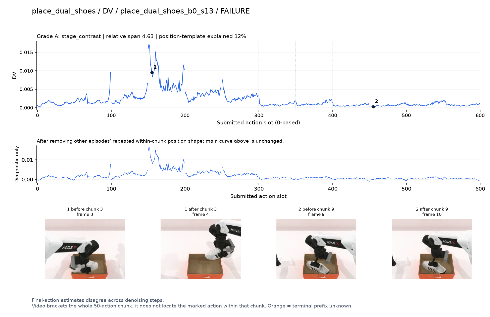
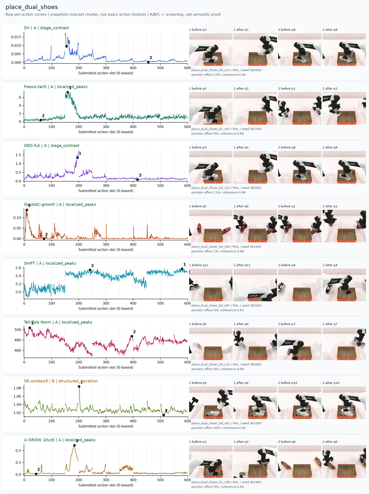
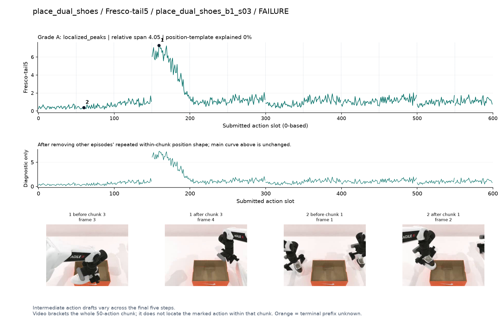
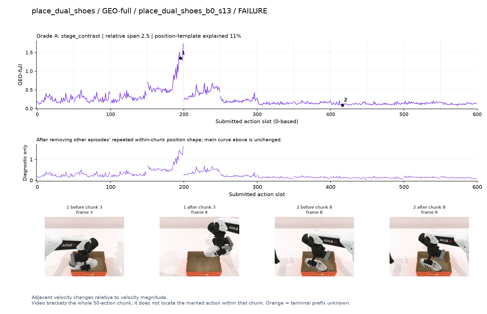
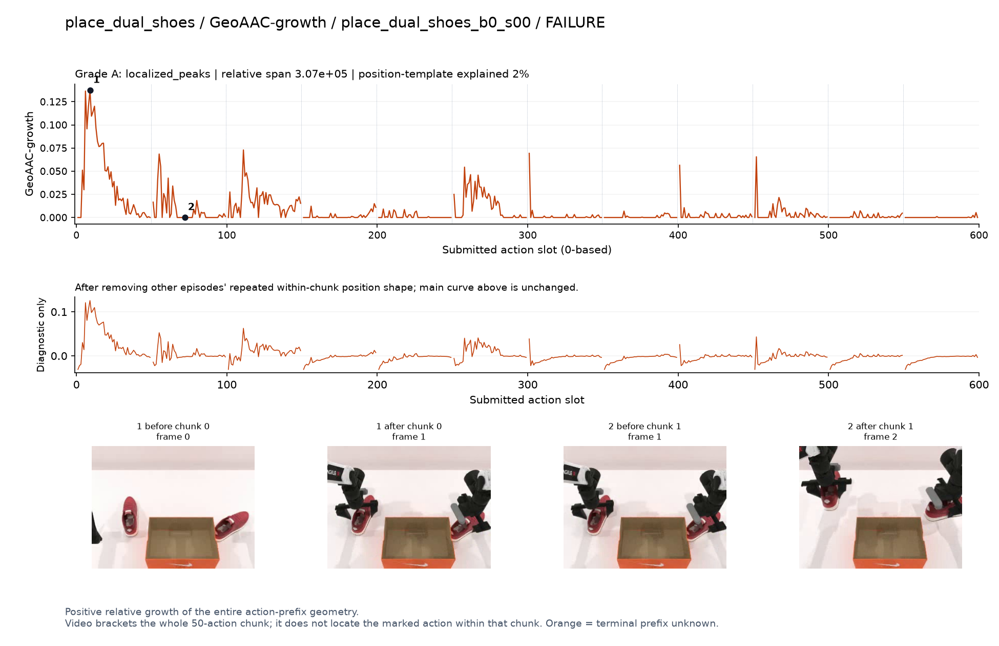
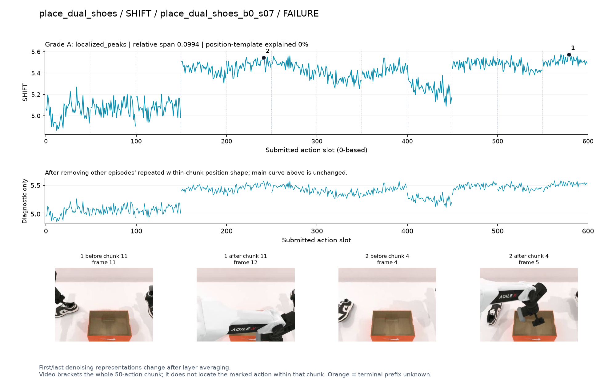
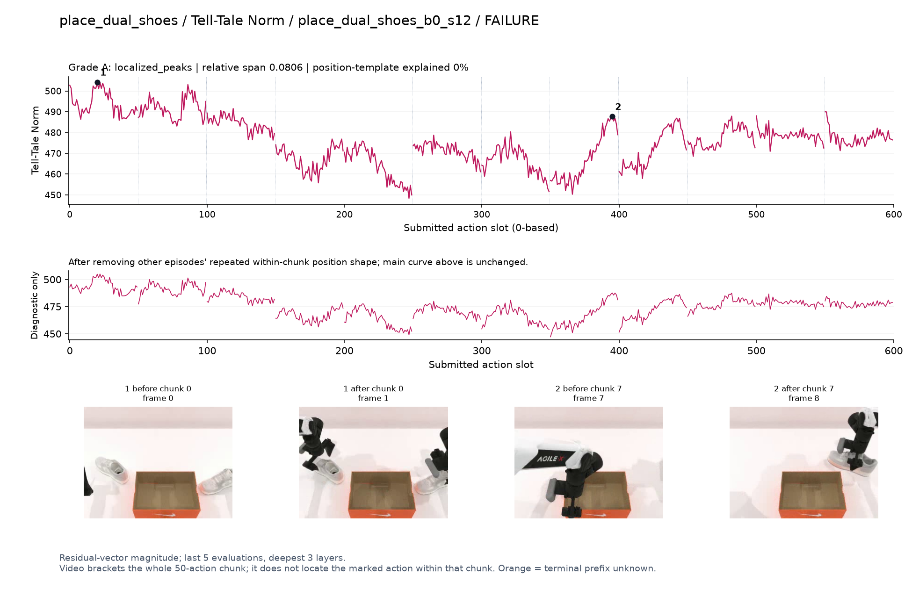
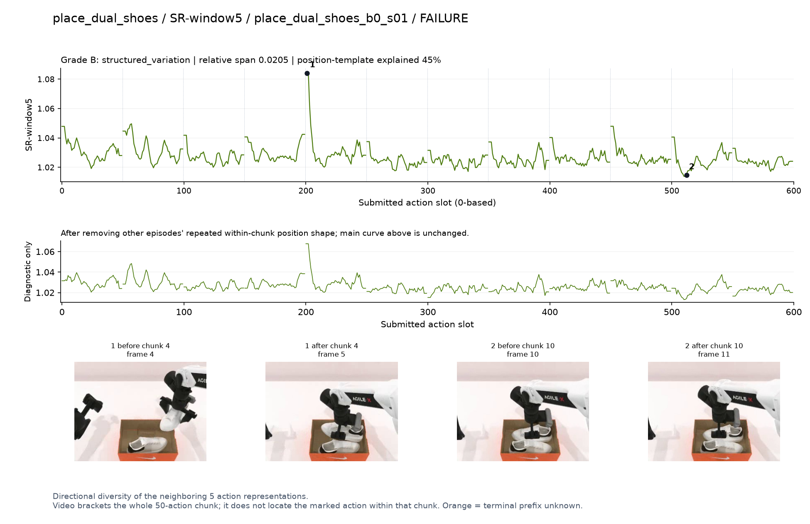
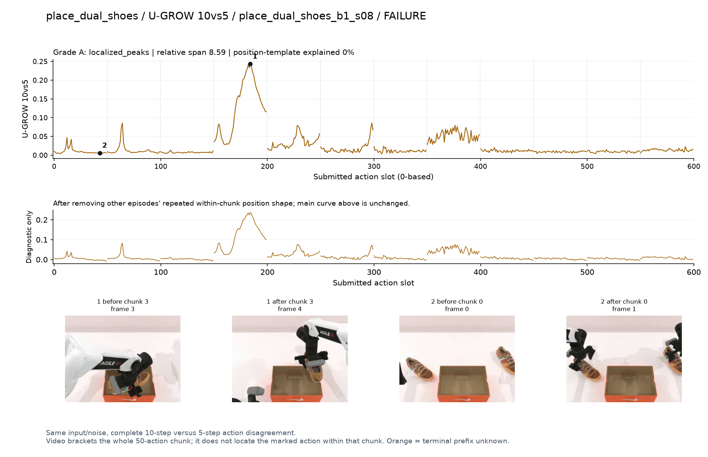

DV · A · stage_contrast
Final-action estimates disagree across denoising steps.
SVG · metadata
Only pre/post chunk frames were recorded. A visible stage transition is a candidate explanation, not proof of a contact instant. Main plots preserve every action score.
人工看图复核：dv [candidate] 失败例候选：q3鞋从箱内/箱边提起并调整时高，后面低。
fresco [candidate] 失败例阶段候选：q3有强宽峰，画面见鞋抬起；但仍高度受生成路径长度影响。
geo [candidate] 失败例候选：同轨迹q3鞋的调整段高，低段仍未成功。
geoaac [confounded] 失败例谨慎：初始接近较高，夹杂前缀开头尖峰。
shift [candidate] 失败例阶段候选：q3后多个chunk整体抬高，不是少量事件峰；路径长度混杂明显。
norm [phase_only] 失败例阶段差异：早期拿鞋幅度高，后续低；不能解释为成功程度。
sr [confounded] 失败例谨慎：q4开始附近强峰与chunk边界重合。
ugrow [candidate] 失败例候选：q3鞋在箱边旋转/调整时明显峰。

Final-action estimates disagree across denoising steps.
SVG · metadata
Intermediate action drafts vary across the final five steps.
SVG · metadata
Adjacent velocity changes relative to velocity magnitude.
SVG · metadata
Positive relative growth of the entire action-prefix geometry.
SVG · metadata
First/last denoising representations change after layer averaging.
SVG · metadata
Residual-vector magnitude; last 5 evaluations, deepest 3 layers.
SVG · metadata
Directional diversity of the neighboring 5 action representations.
SVG · metadata
Same input/noise, complete 10-step versus 5-step action disagreement.
SVG · metadata